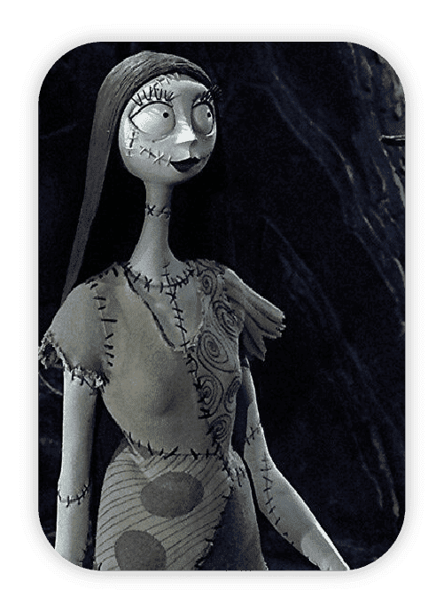
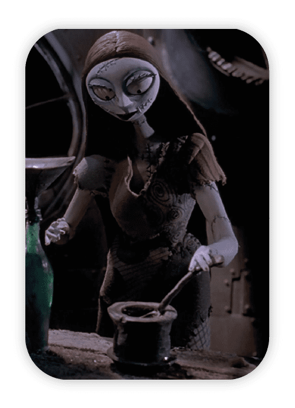

¡Hola, soy Sally!
Hola, soy Sally, una muñeca de trapo un poco tenebrosa y apasionada por la costura, desde joven que disfruto este pasatiempo que es cocer, bordar y realizar muñecas de trapo y es por eso que mis muñecas ¡son las mejores!
Sobre Sally Dolls
Sally Dolls es un emprendimiento autogestivo el cual se dedica a hacer muñecas de trapo por encargo totalmente personalizables asi como también accesorios para tus muñecas.
En la sección encargos podes ver la forma de hacer tu pedido, contamos con envíos tanto a capital, CABA y a todo el país.

